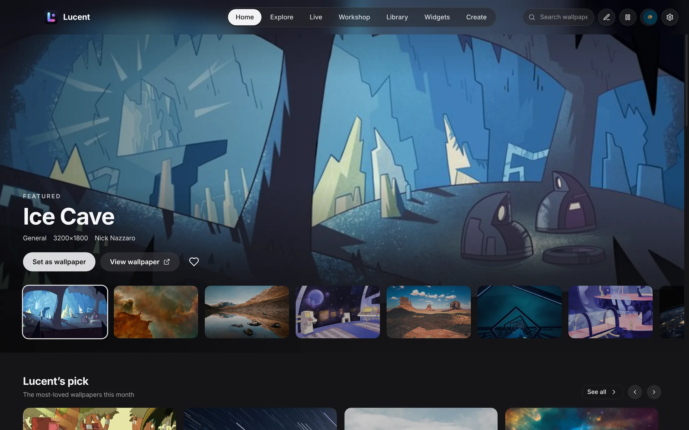
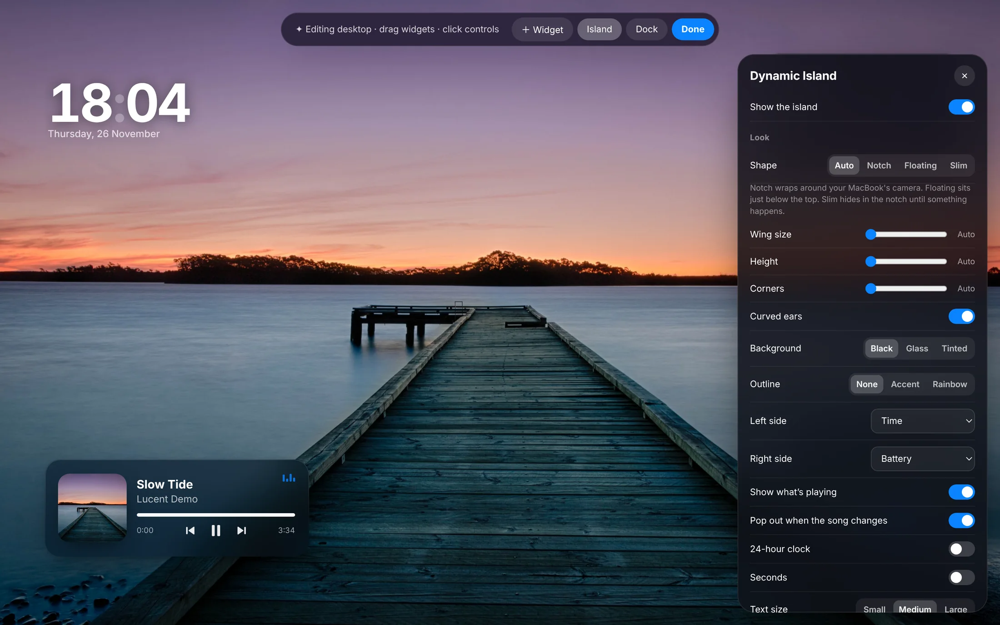
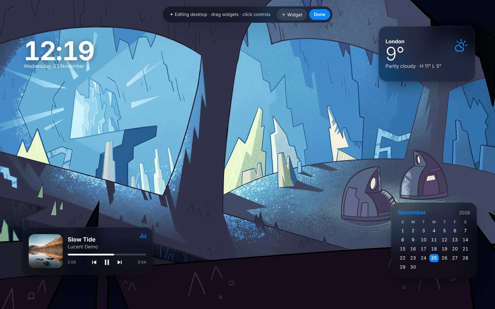
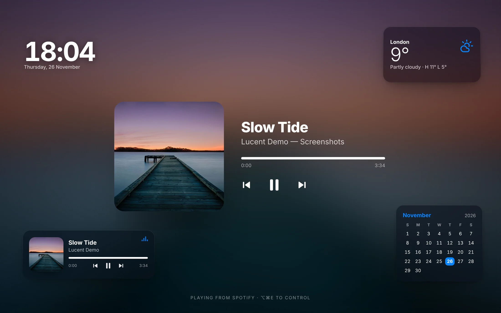
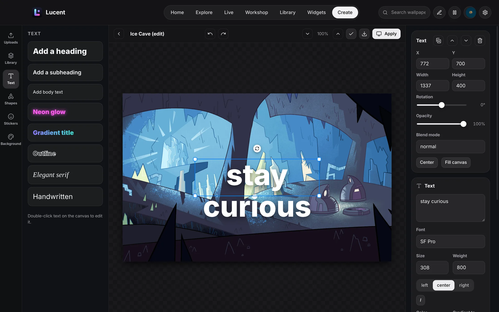
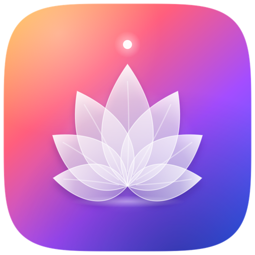
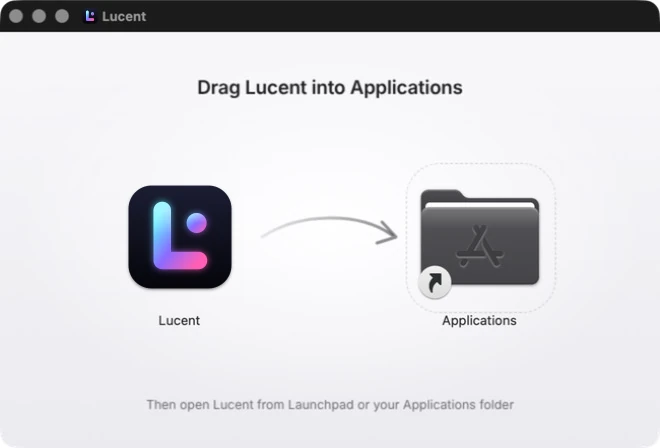

YouTube wallpapersNEW
Your feed, playing on your desktop. Pick a video and the next one starts by itself, like your For You page. Its song shows up in the island.
Live wallpapers, widgets you can drag anywhere and a Dynamic Island, for Mac and Windows.
Free. Needs macOS 12 or later, or Windows 10 or 11.
Drag the widgets, or hover the island at the top
YouTube and websites as wallpapers, two wallpapers at once, a dock with widgets, and a Dynamic Island that wraps around your MacBook’s notch. Turn the sound on: the notch shows what’s playing.
Music: “Afterglow”, made for Lucent. While the video plays, the notch at the top of this page shows it, just like Lucent does.
Home and Explore bring you the community’s top-rated wallpapers from Wallhaven: anime, games, cyberpunk, space and scenery. One click puts it on your desktop.

Wallpapers on this page are free-licensed examples. Credits are at the bottom of the page.
The biggest update yet. Everything here is free and already in the download.
Your feed, playing on your desktop. Pick a video and the next one starts by itself, like your For You page. Its song shows up in the island.
Put any site on your desktop, your bio page, your server list, anything, then click right into it. Press Esc when you’re done.
Side by side, in a corner or blended together. One click to use a wallpaper, another to unequip it.
On a MacBook the Dynamic Island now wraps around the camera, with your song on one side and the beat on the other.
Notch, floating or slim. Size, corners, colours, a rainbow outline, fonts, animation and what each side shows.
Clock, date, weather, battery, CPU, now playing and a next-wallpaper button, right in your dock. Right-click anything in it for options.
Every widget has its own options. Now Playing hides itself until music is playing, and you can turn that off.
The Dynamic Island at the top of your screen wraps around your MacBook’s notch and opens into a whole toolbox. Pick its shape and look, what goes in it, and whether it opens when you hover or click. Tap the mirror to turn the camera off.

They sit right on your wallpaper. Press ⌥⌘E on a Mac or Ctrl+Alt+E on Windows, then drag, resize and restyle them.


Play something in Spotify or Apple Music and the Now Playing wallpaper fills your desktop with the album art and big controls. The island and the music widget control it from anywhere. Mac only for now.

Text, shapes, stickers, photos and filters on a canvas the size of your screen. Start blank or edit the wallpaper you have, then apply it in one click.
Particles drift over whatever wallpaper you choose and move out of your cursor’s way. Fireflies follow it instead. Try them here.
The small things that make it feel like part of your computer.

Version 2.3.0. Free, no ads, and it updates itself.
Open the Apple menu and choose About This Mac. If it says Chip with Apple M1, M2, M3 or M4, pick Apple Silicon. If it says Processor with Intel, pick Intel.
The download links aren’t connected yet. Put your GitHub repository in LUCENT_RELEASES at the bottom of index.html (see README.txt).
Lucent doesn’t come from an app store, so your computer asks you to confirm it once. Here is exactly what you’ll see.
Double-click Lucent-mac-apple-silicon.dmg (or the Intel one) in your Downloads folder.
A window like this opens. Drag the Lucent icon onto the Applications folder, the same as any other Mac app.

Open it from Launchpad or your Applications folder. The first time, macOS says it can’t check Lucent for malware. Click Done (or Cancel).
Open System Settings, choose Privacy & Security, scroll down and click Open Anyway next to Lucent. Confirm with your password or Touch ID.
On macOS 14 or earlier you can instead right-click Lucent in Applications and choose Open.
From now on Lucent opens like any other app. You can eject the Lucent disk in Finder and delete the .dmg.
Open Lucent-windows-setup.exe from your Downloads. If your browser asks whether to keep the file, choose Keep.
Windows shows this screen for new apps it hasn’t seen many times yet. Click More info, then Run anyway.
Microsoft Defender SmartScreen prevented an unrecognised app from starting.
More infoLucent installs without asking for an admin password and opens straight away. Next time, find it in the Start menu or on your desktop.
Pick anything on Home or Explore and click Set as wallpaper.
Press ⌥⌘E (Ctrl+Alt+E on Windows), drag them where you like, then click Done.
In Library, hover over it and click the bin. Quit Lucent from the menu bar to get your normal wallpaper back.
Mac: drag Lucent from Applications to the Bin. Windows: Settings, Apps, Lucent, Uninstall.
If yours isn’t here, the answer is probably in the app’s Settings.
Yes. No subscription and no ads. An account is optional: you only need one to claim a username and your own link.
Yes. Lucent checks for new versions and asks before updating, or does it quietly when you quit if you pick Automatic in Settings, Updates.
Apple checks apps that come from paid developer accounts, and Lucent isn’t notarized by Apple yet. It’s a one-time step: System Settings, Privacy & Security, Open Anyway. After that it opens normally.
SmartScreen warns about apps that haven’t been downloaded many times yet. Click More info, then Run anyway.
Home and Explore show the community’s top-rated, safe-for-work wallpapers from Wallhaven, credited to their artists and for personal use. Explore can also switch to free-license sources: Wikimedia Commons, NASA and Openverse. You can add your own files too.
Still images use almost nothing. Video and interactive wallpapers pause on battery power (you can turn that off), and you can pause everything from the island or the menu bar.
Yes. Each display can have its own wallpaper.
Yes. Open the YouTube tab, pick a video and it plays on your desktop, then the next one starts by itself. For a website, add it in Library (Import, then paste the link). To click and scroll it, choose Use it in Library or press ⌥⌘I (Ctrl+Alt+I on Windows), and press Esc when you’re done.
Quit Lucent from its menu bar icon (or the tray icon on Windows) and your usual wallpaper is back.
Almost. Windows support is new, so it’s marked beta, and music controls (Now Playing) are Mac-only for now.
Open the Apple menu and choose About This Mac. Apple M1, M2, M3 or M4 means Apple Silicon. Intel means the Intel download.
On a Mac, quit Lucent and drag it from Applications to the Bin. On Windows, open Settings, then Apps, find Lucent and click Uninstall.
Here’s how to open Lucent the first time.
Download didn’t start? Click here to try again.